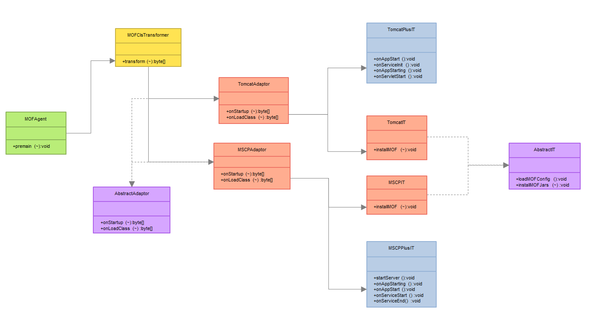
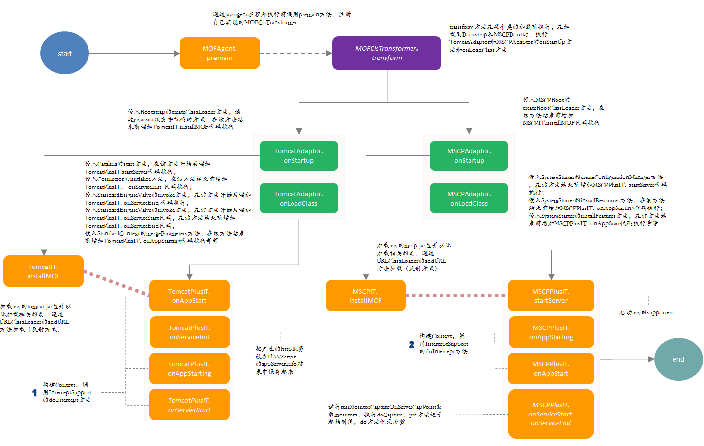

MOF Agent
MOF Agent组件图
MOF Agent主要原理：
主要利用JavaAgent技术实现预加载代码监控业务逻辑植入。
核心组件：
MOFAgent
MOFClsTransformer
MOFAdaptor
MOFInterceptor核心技术
JavaAgent
Javassist
MOF Agent TomCat/MSCP劫持原理
TomcatAdaptor/MSCPAdaptor劫持说明：
TomcatAdaptor/MSCPAdaptor主要有onStartup和onLoadClass两个方法：
onStartup主要功能是完成目标劫持类加载和初始时完成植入自己字节码功能 ; onLoadClass主要功能是完成业务逻辑中代码劫持和UAV监控逻辑字节码植入功能.TomcatIT/MSCPIT解析：
TomcatIT/MSCPIT对应TomcatAdaptor/MSCPIT执行onStartup时类加载和配置文件初始化工作
TomcatPlusIT/MSCPPlusIT解析：
TomcatPlusIT/MSCPPlusIT对应TomcatAdaptor/MSCPPlusIT中执行onLoadClass的不同Class及方法中执行的监控逻辑.
Tomcat/MSCP 关键劫持点及功能：
Tomcat劫持关键点:
Bootstrap\(createClassLoader\)-->Tomcat初始化时完成MOFJar包加载和配置文件初始化 Connector\(invoke\)-->Tomat 在 onServiceStart方法是执行的MOF监控逻辑MSCP劫持关键点:
MSCPBoot\(createBootClassLoader\): 对应加载MSCP时初始化MOFJAR包功能 SystemStarter\(startServer\):对应系统执行时MOF监控逻辑
MOF-MOFAgent包级依赖结构

关键技术：
JavaAsssist
HOOK (拦截框架)
webAppClassLoader关键类及功能：
TomcatAdpater
MSCPAdpaterProfile数据和客户端监控指标主要通过InterceptSupport和hookProxy机制实现捕获和监控功能.
监控数据也会通过DataStore对象存储及提供JMX接口。关键配置文件或脚本：
uavmof.location
run.sh--〉javaAgentuav.properties
MOFAgent类图

MonitorFramework的启动流程
